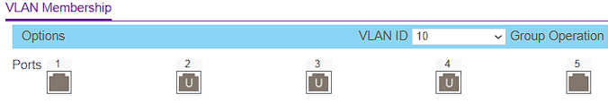

Designing, implementing, and evaluating a functional Storage Area Network (SAN) using consumer-grade hardware and open-source tools.
01. Context & Problem Statement
[cite_start]During my first project meeting, my mentors explicitly stated that a standard NAS (Network Attached Storage) project would not be sufficiently challenging for Semester 6. A NAS operates at the file level, introducing overhead that makes it suboptimal for enterprise virtualization workloads[cite: 38, 68].
The Challenge: How can I design, implement, and validate a functional SAN using only hardware I have at home, while proving its superiority over NAS in performance?
02. Hardware Stack
[cite_start]The environment was built to simulate a realistic "zero-cost" enterprise scenario, utilizing devices I already owned[cite: 39, 41].
| Device | Role | Configuration |
|---|---|---|
| Intel NUC | iSCSI Target | [cite_start]i5, 8GB RAM, Ubuntu Server 24.04 [cite: 170] |
| 1TB HDD | Physical Storage | [cite_start]USB 3.0 Expansion Drive [cite: 39] |
| Netgear GS105E | Managed Switch | [cite_start]VLAN 10 (Ports 2-4) / VLAN 1 (Ports 1,5) [cite: 325] |
| Uni Laptop | Client (Initiator) | [cite_start]Windows 11, Microsoft iSCSI Initiator [cite: 238] |
 [cite_start]
[cite_start]03. The Setup: Getting a Clean Start
I started by restoring my Intel NUC to factory defaults. It had been used as a home lab before, but I needed to start from zero to document the process accurately.
Hardware Upgrade
[cite_start]I swapped my old Linksys switch for a Netgear GS105E[cite: 188]. This was crucial because it supports 802.1Q VLAN tagging, which allows me to segment the network properly later.
Fresh Install & Mounting
[cite_start]I installed Ubuntu Server 24.04.3 LTS via a bootable USB created with Rufus[cite: 191]. [cite_start]During installation, I set the static IP to 192.168.2.200[cite: 194]. [cite_start]After booting, I plugged in the 1TB drive[cite: 196].
# 1. Wipe the old NTFS partition
sudo mkfs.ext4 -F /dev/sda
# 2. Create mount point and mount
sudo mkdir /san
sudo mount /dev/sda /san
# 3. Persist in /etc/fstab
# Extracted UUID via 'sudo blkid /dev/sda'
echo "UUID=2e35... /san ext4 defaults 0 2" | sudo tee -a /etc/fstab04. iSCSI Implementation
[cite_start]I utilized the Linux-IO (LIO) stack via targetcli-fb[cite: 209]. Instead of passing the whole physical disk, I created a 100GB file-backed LUN. [cite_start]This mimics a virtual disk[cite: 214].
sudo targetcli
# Create the Backstore (The Virtual Disk)
/backstores/fileio create name=lun0 file_or_dev=/san/lun0.img size=100G
# Create the Target IQN (The Identity)
/iscsi create iqn.2025-11.nl.fontys:san
# Map the LUN to the Target
/iscsi/iqn.2025-11.nl.fontys:san/tpg1/luns create /backstores/fileio/lun005. The CHAP Drama
This was the hardest part of the implementation. Enterprise storage requires authentication, so I attempted to enable Mutual CHAP (where both client and server verify each other).
The Failure: My initial attempts failed. [cite_start]Windows 11 refused to connect[cite: 244]. I discovered two issues:
-
[cite_start]
- My password was 21 characters long (too long for some initiators)[cite: 177]. [cite_start]
- Windows 11 has a known bug with Mutual CHAP in the Microsoft Initiator[cite: 178].
[cite_start]The Fix: I switched to Unidirectional CHAP and shortened the password to 12 characters[cite: 270].
# Create ACL for the laptop
/iscsi/.../tpg1/acls create iqn.1991-05.com.microsoft:kevin-s-lap
# Set Authentication (Unidirectional only)
cd /iscsi/.../tpg1/acls/iqn.1991-05.com.microsoft:kevin-s-lap
set auth userid=kevin password=KevinPass123
set auth mutual_userid= disabled
Once this was applied, I connected via the Windows GUI Initiator. The 100GB LUN appeared as "Disk 1" in Disk Management. [cite_start]I initialized it as GPT and formatted it as NTFS (Volume Label: SAN-100GB) [cite: 251-257].
 [cite_start]
[cite_start]06. VLAN Security
Authentication isn't enough. I needed network isolation. [cite_start]I accessed the Netgear switch interface (found at 192.168.2.4) and configured 802.1Q Advanced VLANs[cite: 332].
-
[cite_start]
- VLAN 1 (Home): Ports 1 & 5 (Router Uplink)[cite: 329]. [cite_start]
- VLAN 10 (SAN Fabric): Ports 2, 3, 4 (NUC & Laptops)[cite: 328].

[cite_start]
Result: When my laptop is on Wi-Fi, the SAN IP 192.168.2.200 is unreachable. It only becomes visible when physically plugged into ports 2-4. [cite_start]This effectively "air-gaps" the storage traffic from the home network[cite: 346].
07. Performance Benchmarks
[cite_start]I ran CrystalDiskMark 9.0.1 (4GiB test file, 5 runs) to compare the iSCSI SAN against a temporary SMB (NAS) share I set up on the same NUC[cite: 276].
| Metric | iSCSI SAN (Block) | NAS (File) | Analysis |
|---|---|---|---|
| Seq. Read (Q8T1) | 117.41 MB/s | 117.52 MB/s | [cite_start]Tie: Both saturated the Gigabit Ethernet link[cite: 289]. |
| Random Read (4K) | 101.51 MB/s | 11.25 MB/s | [cite_start]SAN Wins (~9x): Massive advantage for VM booting[cite: 291]. |
| Random Write | 0.16 MB/s | 9.05 MB/s | [cite_start]HDD Bottleneck: The USB translation layer struggled with small block writes[cite: 305]. |
 [cite_start]
[cite_start]08. Future Steps: ESP32 Ingestion
To prepare for the next phase (IoT), I created a dedicated directory on the SAN. [cite_start]An ESP32-C3 will eventually log temperature data here via an MQTT broker running on the NUC[cite: 368].
sudo mkdir /san/esp32_data
sudo chown nobody:nogroup /san/esp32_data[cite_start]The SAN is now fully operational, secure, and ready for data ingestion[cite: 354].